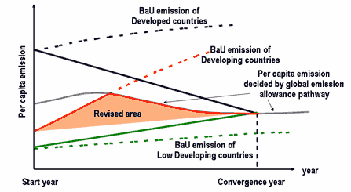

There is a disadvantages in the convergence process for the developping countries under the C&C. A small emission country in the start year(red dotted line) is allocated a small emission less than global per capita amission(grey line) until convergence year. Resived C&C provides the diffenrent convergence process for the developping countries. Before convergence year, the projected BaU emission is allocated for a developing country till exceeding the global per capita emission. After exceeding it, the global per capita emission is allocated for a developing country. Revesed area of this scheme comparing to the simple C&C is derected in the following figure.
